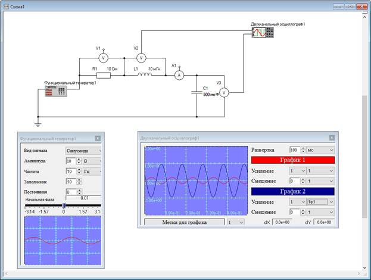
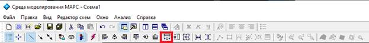

эксперимент над последовательной RLC-цепью во временной области [TG1]
Рисунок 1 – Структура многоуровневой компьютерной модели физической задачи
Пусть требуется найти значения амплитуд тока в цепи и напряжений на элементах (R, L, C) при их различных значениях, а также при различных значениях амплитуды и фазы входного напряжения.[TG2]
Шаг 1. Формирование модели электрической цепи на объектном уровне
1.1 Установка пассивных элементов. Необходимые элементы для построения модели исследуемой цепи находятся в папке «Электротехника». В папке «Электротехника/Пассивные двухполюсники», представленной на рисунке 2, находятся Земля, Резистор, Индуктивность и Емкость.
Рисунок 2 – Содержание вкладки «Электротехника/Пассивные элементы»
Разместив данные элементы на схему (смотри пункт 2.8.2 инструкции), на объектном уровне многоуровневой компьютерной модели получим следующий вид, представленный на рисунке 3.
Рисунок 3 – Схема с установленными пассивными компонентами
1.2 Установка источника сигнала (генератора). Для выполнения эксперимента над компьютерной моделью электрической цепи рекомендуется использовать Функциональный генератор. Он является виртуальным прибором и находится в папке «Макрокомпоненты», представленной на рисунке 4.
Рисунок 4 – Папка «Макрокомпоненты» дерева компонентов
Установив функциональный генератор на схему, получим вид набора компонентов, представленный на рисунке 5.
Рисунок 5– Формируемая схема объектного уровня с установленным функциональным генератором
Принцип работы с функциональным генератором представлен в разделе 5.5 инструкции.
1.3 Установка измерительных компонентов. Для получения результатов моделирования, к которым относятся напряжения на пассивных элементах цепи и протекающий по ним ток, установим измерительные компоненты – вольтметр и амперметр, находящиеся во вкладке «Электротехника / Измерительные компоненты» (рисунок 6).
Рисунок 6 – Вкладка «Измерительные компоненты»
Эти компоненты имеют третий вывод для передачи временных характеристик на визуальные компоненты (осциллограф, график и т.п.).
Установив амперметр и вольтметры для измерения напряжений на каждом из элементов на схему, получим модель, представленную на рисунке 7.
Рисунок 7 – Формируемая схема объектного уровня
1.4 Установка осциллографа. Для визуализации измеряемых переменных используем двухканальный осциллограф, который находится во вкладке «Макрокомпоненты», представленной на рисунке 4. Схема с установленным двухканальным осциллографом представлена на рисунке 8.
Рисунок 8 – Схема с установленным двухканальным осциллографом
1.5 Соединение компонентов. Соединим последовательно все выводы компонентов. Принципы соединения компонентов и образования узлов представлены в пунктах 2.8.3 и 2.8.4 соответственно. Соединив все компоненты, получим схему, представленную на рисунке 9.
Рисунок 9 – Соединение компонентов для образования цепи
1.6 Подключение осциллографа. Подключим осциллограф для визуализации напряжений на индуктивности L1 и на ёмкости С1. Для этого соединим свободные выводы вольтметров V2 и V3 с двумя выводами осциллографа. Результат этой операции продемонстрирован на рисунке 10.
Рисунок 10 – Подключение осциллографа для визуализации результатов
Шаг 2. Проведение эксперимента во временной области. для проведения эксперимента во временной области вначале запустим схему с помощью кнопки и убедимся в работоспособности схемы. Если на функциональном генераторе установить «Вид Сигнала» «Синусоида» и установить значения параметров двухканального осциллографа, как показано на рисунке 11, то можно увидеть осциллограмму, представленную на рисунке 11.
Принципы работы с двухканальным осциллографом и его параметры приведены в разделе 5.5 инструкции к среде моделирования МАРС.
Рисунок 11 – Результат запуска модели на анализ
Если по каким-то причинам Вы не увидели на осциллограмме соответствующие графики, рекомендуем Вам внимательно прочитать шаг 1 и проверить правильность формирования модели.
Шаг 3. Выбор режима анализа. Для анализа компьютерных моделей, в которых используются функциональный генератор и/или одно- или двух канальный осциллографы, используется вид анализа Эксперимент во временной области. Этот режим анализа может быть задан вручную. Для этого в окне Настройка ядра во вкладке Динамика необходимо выбрать пункт Эксперимент, как показано на рисунке 12.
Рисунок 12 – Вкладка Динамика окна настроек режимов работы вычислительного ядра
(!) Вид анализа Эксперимент обеспечивает анализ исследуемой модели во временной области с увеличением времени до момента, когда пользователь сам остановит эксперимент. При выборе другого режима анализа можно некоторое время наблюдать на осциллографе синусоиду, но при достижении конечного времени анализа работа вычислительного ядра может прекратиться и изменение значений параметров уже не будут влиять на изменение осциллограммы. В таблице для ряда директив анализа задаются параметры, в виде минимального и максимального значения времени/частоты, минимальный и максимальный шаг их изменения, а также точность выполнения вычислительного эксперимента
Шаг 3. Варьирование значениями параметров пассивных элементов.
3.1. Изменение значений параметров в режиме редактирования модели. Изменить значения параметров пассивных элементов можно в режиме редактирования схемы. Для этого необходимо мышью при выключенной кнопке , то есть когда не запущен вычислительный эксперимент, выделить компонент, значение параметра которого необходимо заменить. Например, емкость С1 на рисунке 13.
(!) В режиме формирования модели на любом уровне поля редактора видны точки сетки, как показано на рисунке 13, а в режиме проведения вычислительного эксперимента точки сетки отсутствуют.
Рисунок 13 – Компонентная цепь с выделенным элементом
В его вкладке свойства необходимо установить новое значение, как показано на рисунке 14.
Рисунок 14 – Вкладка «Свойства» с новым значением емкости
Результат изменения емкости показан на рисунке 15, где изменился вид осциллограмм.

Рисунок 15 – Результат с измененным значением ёмкости
(!) Заметьте, что в режиме анализа точки на поле редактора отсутствуют.
3.2. Изменение параметров компонентов в режиме анализа модели. Для интерактивного изменения параметров модели используются компоненты «Атрибут». Для его установки на логическом уровне многоуровневой модели необходимо выделить компонент в исходной цепи, которому он будет принадлежать, нажать правую кнопку мыши и в появившемся меню перейти на пункт «Связь с атрибутом». Проделав эту манипуляцию для трех компонентов: сопротивления R1, индуктивности L1 и ёмкости C1 на логическом уровне редактора появятся три компонента «Атрибут». Результат операции представлен на рисунке 16.
Рисунок 16 – Установка компонентов «Атрибут» для компонентов объектного уровня
Подключим к установленным на логическом уровне компонентам-атрибутам визуальные компоненты «Регуляторы с прямоугольным бегунком», которые находятся во вкладке «Визуальные компоненты \ Визуальные компоненты L-V \ Регуляторы/Индикаторы / Движковые» и соединим их с соответствующими компонентами-атрибутами. Результат этого действия представлен на рисунке 17.
Рисунок 17 – Подключение регуляторов к компонентам-атрибутам
С помощью вкладки «Свойства», пример которой приведен на рисунке 14, изменим значения «Минимум» и «Максимум» на соответствующие значения. На ней же изменим свойство «Название компонента» на «Сопротивление R1», «Индуктивность L1» и «Ёмкость С1» соответственно. Перейдя на визуальный уровень, передвигая индикаторы с помощью мыши, расположим их друг за другом, для выравнивания по ширине воспользуемся кнопкой «Подогнать ширину», которая показана на рисунке 18.

Рисунок 18 – Место положение кнопки «Подогнать ширину» на панели инструментов
Результат этого действия представлен на рисунке 19.

Рисунок 19 – Формирование регуляторов для интерактивного изменения значений параметров элементов цепи
Используя эти регуляторы во время анализа схемы, можно наблюдать за изменением временных диаграмм соответствующих переменных RLC-цепи (рисунок 20).
Рисунок 20 – Результат работы схемы при варьировании значений параметров цепи
Для завершения эксперимента необходимо нажать кнопку .
4. Сохранение схемы.
Если необходимо сохранить модель для дальнейшего использования
необходимо воспользоваться кнопкой  , пунктом Сохранить или Сохранить как. Если имя файла
схемы было ранее присвоено, то при нажатии на кнопку или на пункт
Сохранить, схема сохранится в указанный файл безо всякого
оповещения. Если сохраняется новая схема или Вы воспользовались
пунктом меню Сохранить как, то на экран будет выведено
диалоговое окно Сохранить, представленное на рисунке 21.
, пунктом Сохранить или Сохранить как. Если имя файла
схемы было ранее присвоено, то при нажатии на кнопку или на пункт
Сохранить, схема сохранится в указанный файл безо всякого
оповещения. Если сохраняется новая схема или Вы воспользовались
пунктом меню Сохранить как, то на экран будет выведено
диалоговое окно Сохранить, представленное на рисунке 21.
Рисунок 21 – Окно Сохранить
В поле выберите место на диске, куда необходимо сохранить файл, а в поле Имя файла введите любое имя и нажмите кнопку . Если сохранять не нужно, то необходимо нажать кнопку .
5. Закрытие программы. Для того, чтобы закрыть программу, можно воспользоваться пунктом Выход в меню Файл или нажать на кнопку в верхнем правом углу основного окна среды моделирования МАРС
Минимальные системные требования:
Процессор: c двумя и более физическими ядрами, поддерживающий технологию SSE2
Видеокарта: GeForce 8600/ATI Radeon HD 4550M
Оперативная память: 2 ГБ для Windows 7/8/10
Операционная система: Windows 7/8/10
Место на диске: 40 ГБ
Рекомендуемые системные требования:
Процессор: Intel Core i5-7400 / AMD Ryzen 5 1500X
Видеокарта: NVIDIA® GeForce GTX 1050 Ti 4 ГБ / NVIDIA® GeForce GTX 1650 4 ГБ / Radeon RX 570 (4 ГБ)
Оперативная память: 8 Гб
Операционная система: Windows 7/8/10 — 64-bit
Место на диске: 61.5 ГБ
Скорость интернет-соединения: 1024 Кбит/с или выше (для работы голосового чата)